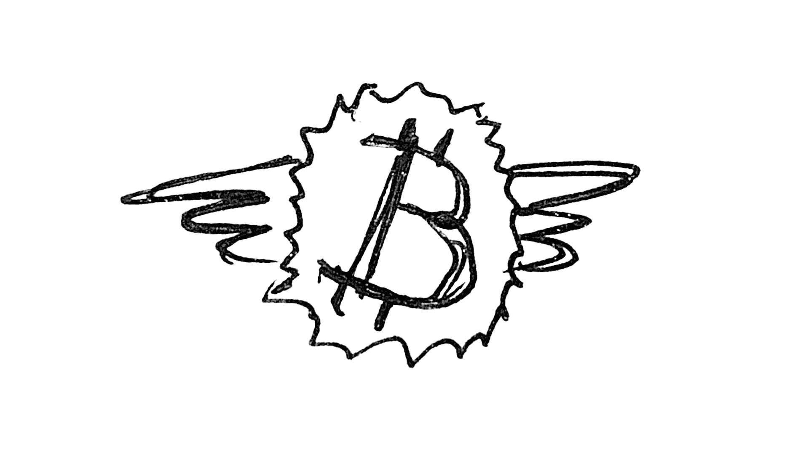

Про крипту в Лиме, Перу
Первое. Крипта - это сильно проще чем кажется когда не знаешь про неё ничего. Сам такой был, что "ой как там всё сложно и непонятно" )
Но когда первый раз обналичиваешь - понимаешь как всё просто и начинаешь жалеть что раньше не решился попробовать. Ну и есть ощущение магии от того насколько всё быстро происходит по сравнению с банковскими переводами. Условно, мгновенно.
(Для сравнения банковский перевод в Россию идёт минимум сутки, в среднем дня три, в некоторых случаях - полтора месяца. Примеры из личной практики)
Второе. Крипта - это не только майнинг, игра на бирже и другие способы обогащения. Это отличный инструмент трансграничных переводов, показавший себя более надёжным чем вот эти танцы с юнионпеем, белорусскими картами и страхом что банкомат сожрёт твою карту (в Перу это нередко, сам был в этой ситуации.
Не все криптовалюты подвержены скачкам курса. Есть т.н. стейблкоины - это привязанные к обычной валюте, например доллару. Например, USDT.
Так что при желании в крипте можно хранить деньги вместо банка. Если есть что хранить 🙂
Да, есть риски, но в целом правило простое: не хранить на бирже. Только на кошельке. Для понимания разницы подходов к кошелькам рекомендую вот эту статью.
Главное. К крипте нужно относиться не с сомнением или обожанием, а нейтрально. Это просто инструмент. И умение им пользоваться сильно облегчает жизнь зарубежом, особенно русским в текущих условиях.
Ещё важно знать что одна и та же валюта может существовать в разных сетях. Например прочитайте про сети Tron и ETC-20. Загуглите. Поначалу будет страшно и непонятно, но всё проще чем кажется. Просто перед платежом внимательно проверяйте адрес кошелька и сеть. Потому что если отправите не на ту сеть, деньги потеряете без возможности вернуть. Это не банк, который может отменить операцию.
Тем, кому нужно продать или купить крипту в России, почитайте про P2P.
Теперь про крипту применительно к Перу. #
В Лиме есть криптоматы, где можно обналичить BTC, USDT, ETH и DAI. Список и карта.
🟡 Один из них с комиссией всего 1%, но в нём вечно нет денег. Сеть ETC-20. Есть неплохая поддержка в ватсапе, которая неоднократно помогла решить проблемы с криптоматом и с повышением времени на транзакцию.
🟢 В районе парка Кеннеди возле магазина Miniso есть обменник обычной валюты, где можно и крипту обналичить. Комиссия 3%, но деньги есть всегда в любых количествах. Сеть Tron.
😎 Ни там, ни там не нужен паспорт или другие документы. Всё анонимно.
🔴 Есть контора, где по паспорту и комиссия 8%. Плюс деньги выдают ОЧЕНЬ долго. Не рекомендую. Но как запасной вариант.
Помните, на все ваши вопросы уже даны ответы где-то. Спрашивайте у Гугла, у Яндекса, у ChatGPT.
Успехов!